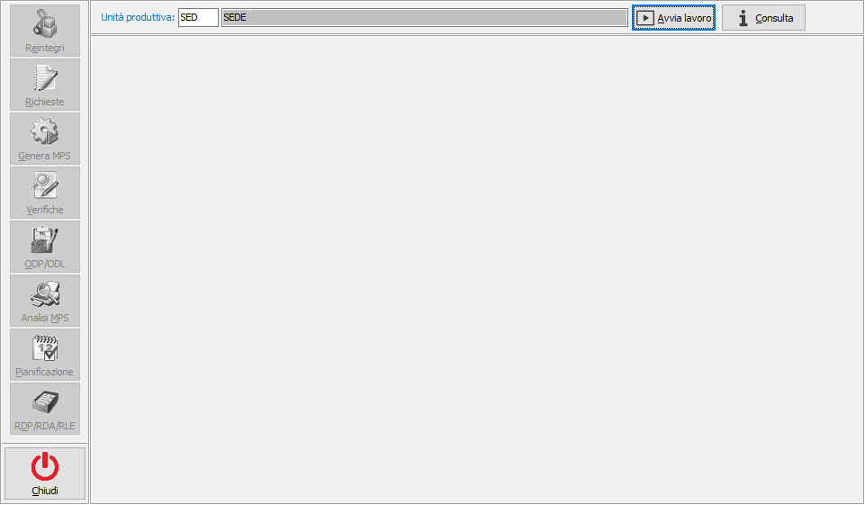

Gestione MPS
Il nucleo operativo della fase di pianificazione è rappresentato dalla procedura di gestione MPS al cui interno sono gestite le diverse fasi che partendo dalla richiesta di produzione portano fino al calcolo del fabbisogno ed alla sua copertura.
All'accesso viene presentata la finestra principale vuota e con i pulsanti di funzionalità spenti e con proposta l'unità produttiva di default valida per l'utente connesso ad OS1; è possibile solo scegliere l'unità produttiva, se gestite in configurazione le unità produttive multiple, premere il pulsante Avvia lavoro, il pulsante Consulta o chiudere e tornare a menù.

Al momento in cui viene premuto il pulsante Avvia lavoro si attivano le varie funzionalità comprese nella procedura e si può cominciare ad operare sull'unità produttiva selezionata e riportata nella barra del titolo; premendo sui pulsanti a sinistra si passa da una funzionalità all'altra e nella parte destra della finestra compariranno le finestra relative alla funzionalità scelta; è possibile passare da una funzionalità all'altra senza perdere le operazioni in corso a meno che non venga eseguita un'operazione che abbia influenza su tutte le funzioni previste, ad esempio la generazione del piano o la pianificazione; quindi sarà possibile, ad esempio, eseguire l'elaborazione delle RDP, andare in analisi e tornare sulle RDP ritrovando esattamente quello che è stato lasciato prima di richiamare l'analisi e così via.
Il pulsante Consulta consente l'accesso a tutte le funzionalità di analisi ed alle funzioni di gestione in modalità di sola visualizzazione; le altre funzionalità sono disabilitate.
E' importante sapere che un solo operatore alla volta può utilizzare la gestione MPS, dal momento in cui si preme Avvia lavoro fino a quando non sarà premuto Termina lavoro alla procedura non potrà accedere nessun altro utente.
Nella finestra ed in tutte le funzionalità previste non è gestito il tasto ESC per uscire sia dalle singole funzioni che dalla finestra stessa; per cambiare funzionalità è necessario premere il pulsante della funzione desiderata, per terminare il lavoro è necessario premere il pulsante Termina lavoro e successivamente il pulsante Chiudi per tornare a menù.